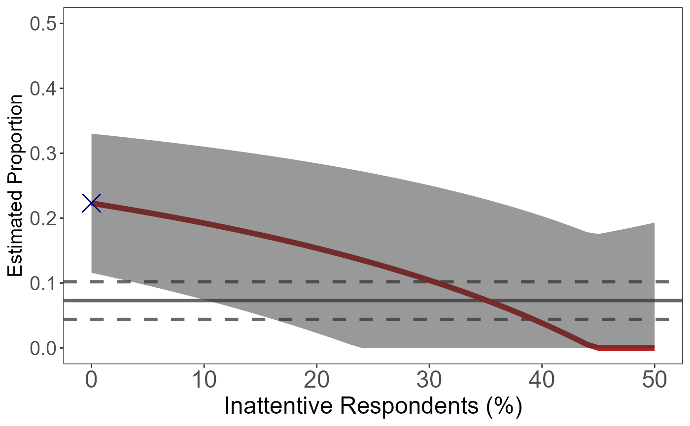

cmBound is used to apply a sensitivity analysis and visualize the sensitivity bounds for naive crosswise estimates.
cmBound(lambda.hat, p, N, kappa = 0.5, dq = NULL, N.dq = NULL)a value for the observed crosswise proportion: Prop(TRUE-TRUE or FALSE-FALSE).
an auxiliary probability for the crosswise question.
a value for the number of survey respondents in the crosswise (and anchor) question.
an optional value specifying the probability with which inattentive respondents choose the crosswise item in both the crosswise and anchor questions (default is 0.5.
a value for a point estimate from direct questioning (if available).
a value for the number of survey respondents in direct questioning (if available).
A ggplot object visualizing the result of sensitivity analysis.
Atsusaka, Y. and Stevenson, R. T. (2023). The crosswise model for sensitive survey questions. doi:10.1017/pan.2021.43 .
[bc_est()] for bias-corrected prevalence estimation.
p <- cmBound(lambda.hat=0.6385, p=0.25, N=310, dq=0.073, N.dq=310)
#> Warning: Using `size` aesthetic for lines was deprecated in ggplot2 3.4.0.
#> i Please use `linewidth` instead.
#> i The deprecated feature was likely used in the cWise package.
#> Please report the issue at <https://github.com/YukiAtsusaka/cWise/issues>.
p

p <- p + ggplot2::ggtitle("Sensitivity Analysis") +
ggplot2::theme(plot.title = ggplot2::element_text(size=20, face="bold"))